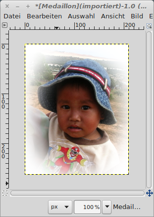

Kanten ausblenden
Die Auswahlwerkzeuge ermöglichen auch einen fließenden Übergang, mit
dem vielfältige Effekte erzielt werden können. Hier ein Beispiel, mit
dem ein Medaillon erzeugt wird:

|
Abb. 1: Das Original-Foto
|
Zunächst wird mit dem Auswahlwerkzeug "Rechteckige Auswahl" der
Bildbereich markiert, der später das fertige Medaillon werden soll:

|
Abb. 2: Rechteckige Auswahl
|
Die überflüssigen Bildanteile werden mit dem Schneidewerkzeug entfernt.
Dazu unter
Bild →
Auf Auswahl zuschneiden klicken.

|
Abb. 3: Das Bild wurde zurecht geschnitten
|
Mit dem Werkzeug "Elliptische Auswahl" wird die Form und die Position
des Medaillons festgelegt. Wichtig ist hierbei, die Option "Kanten
ausblenden" zu markieren und den Radius für den gewünschten
Übergangseffekt zu definieren.

|
Abb. 4: Werkzeug Elliptische Auswahl
|

|
Abb. 5: Das Medaillon wird in seinen Konturen festgelegt
|
Nachdem die Konturen definiert sind, muss die Auswahl noch invertiert
werden (Strg + I), damit der Randbereicht und nicht das eigentliche
Bild entfernt wird. Zur Kontrolle wir dann die Schnellmaske angezeigt
(Umschalt + Q):

|
Abb. 6: Ansicht der Auswahl mit der Schnellmaske
|
Sobald die Entfernen-Taste gedrückt wird, werden die Bereiche, die
nicht rot sind, entfernt:

|
Abb. 7: Das fertige Medaillon
|
© 2009-2017 Michael Roppel